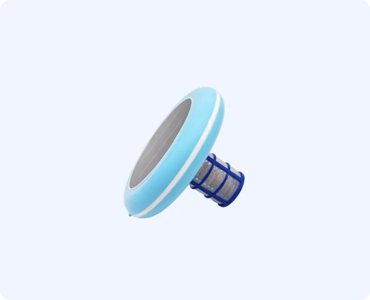

Фильтры для пруда
Электронный ионизатор SR001, 2Вт, для пруда до 150000л
Цена и наличие
- 1 шт.796,54 BYN / шт.В наличии
Данные на 23.11.2026.
Характеристики
- Бренд
- Pondtech
- Тип фильтра
- электронный ионизатор воды
- Для прудов
- до 100000 л
- Объем пруда
- до 150000 л
- Мощность
- 2 Вт
- Для пруда
- до 100000 л
- Материал
- ABS пластик
- Размер
- 21 х 21 см
- Цвет
- голубой
- Особенности
- работает на солнечной батерее
Описание
Электронный ионизатор PONDTECH SR001.
ЭЛЕКТРОННЫЙ ИОНИЗАТОР, ПРИБОР ДЛЯ БОРЬБЫ С ВОДОРОСЛЯМИ PONDTECH SR001 НА СОЛНЕЧНОЙ БАТАРЕЕ Представляем прибор Электронный ионизатор на солнечной батарее, прибор для борьбы с водорослями Pondtech SR001, с помощью которой Вы легко и безвредно для человека, ваших рыбок и растений в бассейне или садового пруду сможете удалить водоросли различного типа (в особенности нитевидные). Ионизатор воды Pondtech SI01 – прибор безреагентной обработки воды, который позволит отказаться от применения хлора и другой химии. Таким образом, можно перейти на экологически чистое обслуживание вашего бассейна или пруда. Устройство компактно, при монтаже не требуются кардинальные переделки уже существующей системы циркуляции и фильтрации или сложные строительно-монтажные работы. Установку приборов можно произвести самостоятельно. Устройство выполняет очистку, обеззараживание воды с помощью технологии электролиза, насыщая воду двух валентными положительно заряженными катионами меди (Cu2+). Монтаж не требуется , достаточно опустить электронный ионизатор в воду. Вода насыщается положительно заряженными катионами, которые воздействуют на бактерии, микробы, клетки водорослей, мелкие вредоносные организмы, вирусы и повреждает их способность к размножению. Отличительной особенностью устройства в отличие от химических средств дезинфекции, является то, что органические вещества (бактерии, водоросли) попадающие по действие прибора не окисляются (разлагаясь на газы), а отмирают, выпадая в осадок и попадают в систему фильтрации. Поэтому данный способ является максимально экологичным методом очистки и обеззараживания воды в пруду или бассейне.
ДОПОЛНИТЕЛЬНО
Прибор может использоваться на водоемах объемом до 150 м³; В отличие от химических средств, данное устройство уничтожает любые виды вредоносных бактерий. Например, хлор не может справиться со спорообразующими микроорганизмами. К тому же, при применении хлора со временем наблюдается процесс “привыкания” микроорганизмов, что приводит к периодической обработке повышенными дозами хлора (хлорный шок); При работе устройства, в отличие от химии, в воде не образуются токсичные продукты, с которыми нужно вести постоянную “борьбу”. Хлорка и другая химия, являясь мощнейшим окислителем, может проникать в глубокие слои кожи, вызывая при этом серьезное раздражение; Купание в бассейне или пруду, при работе устройства способствует увлажнению кожи, улучшает ее регенератные свойства. Больше не будет раздражения, аллергии, красных глаз; Используя воду из водоема, оборудованным данным устройством для полива цветов и сада, вы будете вносить такой важный элемент для растений и почвы, как медь; Использование прибором солнечной энергии сделают обслуживание водоема дешевле; Данное оборудование безопасно для человека, животных, рыбы и растений.